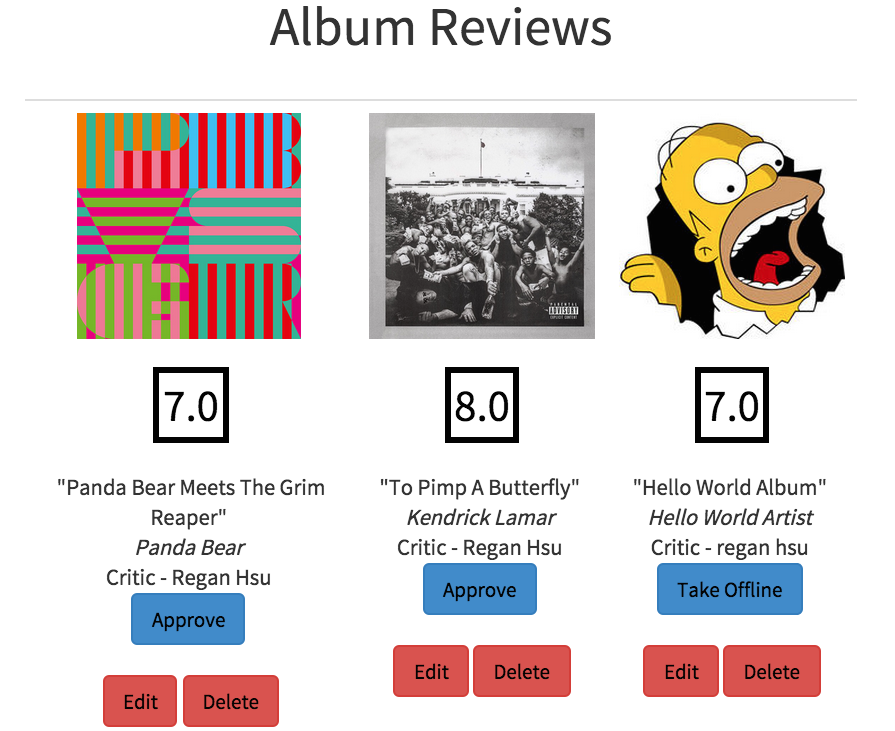
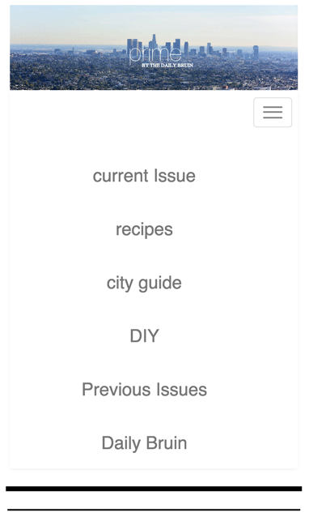

Implemented the currently playing using HTML/CSS, JavaScript, LastFM API and Ken Wheeler's Slick.js.
Created a navigation page which links the user to the profiles of each DJ.
Wrote code which automatically allocates a URL to each submitted show, compresses submitted profile pictures, and creates show profiles.
Implemted Ruby on Rails App independently, which allowed me to learn more about JavaScript and database languages. Above is the front page.

Add/delete user accounts/admin priviledges to members of the radio station

Write Concert/Album Reviews, admins can approve/delete/edit articles
Write Concert/Album Reviews, admins can approve/delete/edit articles
Prior to joining UCLA Radio back in Spring 2014, my knowledge of web development was next to none. I wanted to be part of UCLA Radio because (a) I wanted to share and discover new music, and (b) I wanted to help/learn how to develop a website (UCLA Radio's site was in the process of a complete makeover at the time). I knew a little bit about HTML/CSS markup, and I knew C++ from taking two introductory copmuter science courses at UCLA, but that was the extent of my knowledge in all things related to code.
Little did I know how quickly I could pick up languages such as JavaScript and Ruby after having had rigorous training in C++. Along with HTML and CSS, some knowledge of database languages like pSQL, and Linux commands, these languages would arm me with the tools to make cool websites. So, with the goal of helping UCLA Radio become the best student-run radio station ever, I learned how to use Ruby on Rails (at the time, we thought that RoR would be best web framework to use for the site). My journey into full-stack web development thus began there: http://uclaradio.herokuapp.com. Note(!) - It takes a while to load.
Little did I know how quickly I could pick up languages such as JavaScript and Ruby after having had rigorous training in C++. Along with HTML and CSS, some knowledge of database languages like pSQL, and Linux commands, these languages would arm me with the tools to make cool websites. So, with the goal of helping UCLA Radio become the best student-run radio station ever, I learned how to use Ruby on Rails (at the time, we thought that RoR would be best web framework to use for the site). My journey into full-stack web development thus began there: http://uclaradio.herokuapp.com. Note(!) - It takes a while to load.
Landing Page of Prime Magazine, using HTML/CSS and Bootstrap. Backend implemented as a team through Python Django framework.

Helped improve responsiveness of the site.
Helped implement one-to-many model of city guide articles and corresponding part of LA. Added details to HTML/CSS.
In a 3-month project during Winter 2014-15, a team of 6 including myself on The Daily Bruin refreshed the online version of the culture and lifestyle magazine, Prime. My responsibilities included programming some of the models in the Python Django web framework relating to City Guides, implementing the landing page, and adding some stylizations to the Recipes, City Guides, and DIY pages.
Having already been accustomed to RoR for UCLA Radio, I was able to pick up Python Django with more ease. Needless to say there are differences, and I found myself preferring one framework's method over the other in doing things. For instance, I like how Rails placed more emphasis on the controller rather than the models, views, and additional template in Django. I like how in Django, there is a built in admin home page where you can quickly create new instances of a certain class through an easy-to-use interface.
Having already been accustomed to RoR for UCLA Radio, I was able to pick up Python Django with more ease. Needless to say there are differences, and I found myself preferring one framework's method over the other in doing things. For instance, I like how Rails placed more emphasis on the controller rather than the models, views, and additional template in Django. I like how in Django, there is a built in admin home page where you can quickly create new instances of a certain class through an easy-to-use interface.
Home Page.
Home Page.
Example: San Francisco to Moscow
Tile Design.
Logistics: the site uses node.js, and many different APIs (often resulting in a broken pipe) which request information such as exchange rate, weather, travel routes leaving from your city to the destination. We also scrapped wikipedia for details and an abstract about the destination city.
There were many very useful APIs such as numbeo's cost of living API that we wanted to use, so we could reveal fun-facts like how much does a can of coke cost or how much does a normal meal cost (in big font on its own tile) in the destination city, but with a pricetag of $2600, and without time to obtain an academic license, we were unable to employ it during the Hackathon :(.
Travel Pixie is broken right now :(.
We're working on getting it back up after some big changes.
This was my first true Hackathon project. I attended LAHacks last year, but that was before I knew anything about building websites, and so I didn't accomplish much. The idea of this project is this: if you want to travel to a certain city, you want to be able to gauge what the destination city is like relative to your city of residence. I thought of this idea as I was trying to plan out a trip with my family for this comming summer, and had no idea where to begin. Is the city a realistic destination to spend a few weeks in or just a few days? Would my mom also like the aura of the city? etc. What's the weather like this time of the year? What is the exchange rate? were all questions that came into mind. When my friends and I were thinking of a project idea for LAHAcks, I thought - well, maybe there should be a website that could answer these questions.
The site is designed in a card fashion: each card will reveal some information about the destination. My friends and I thought that this design would allow us to add as much or as little information at our discression. We had 36 Hours so the idea was that once we completed one card of info, we can move onto the next card, and we wouldn't run the risk of seeming totally incomplete at the end of the Hack if we run into problems - we would just have fewer bits of information.
Overall, this Hackathon was an exhilerating experience. Initially, I had my doubts about how much we could get done, and even now, the website doesn't work super efficiently, but we suprised ourselves. And I learned about the severe drawback for using 4-5 different APIs all at once without a database and cache. I learned a lot more about node.js, which I had no prior experience with.
We're working on getting it back up after some big changes.
This was my first true Hackathon project. I attended LAHacks last year, but that was before I knew anything about building websites, and so I didn't accomplish much. The idea of this project is this: if you want to travel to a certain city, you want to be able to gauge what the destination city is like relative to your city of residence. I thought of this idea as I was trying to plan out a trip with my family for this comming summer, and had no idea where to begin. Is the city a realistic destination to spend a few weeks in or just a few days? Would my mom also like the aura of the city? etc. What's the weather like this time of the year? What is the exchange rate? were all questions that came into mind. When my friends and I were thinking of a project idea for LAHAcks, I thought - well, maybe there should be a website that could answer these questions.
The site is designed in a card fashion: each card will reveal some information about the destination. My friends and I thought that this design would allow us to add as much or as little information at our discression. We had 36 Hours so the idea was that once we completed one card of info, we can move onto the next card, and we wouldn't run the risk of seeming totally incomplete at the end of the Hack if we run into problems - we would just have fewer bits of information.
Overall, this Hackathon was an exhilerating experience. Initially, I had my doubts about how much we could get done, and even now, the website doesn't work super efficiently, but we suprised ourselves. And I learned about the severe drawback for using 4-5 different APIs all at once without a database and cache. I learned a lot more about node.js, which I had no prior experience with.